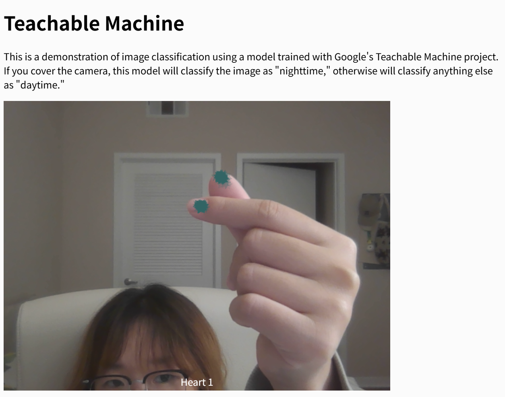
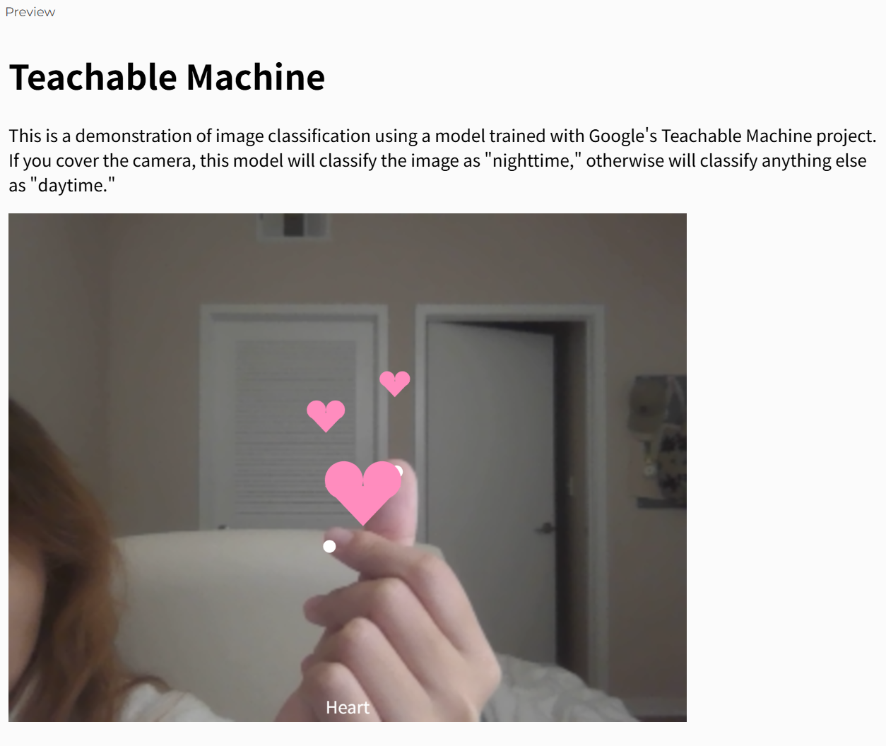
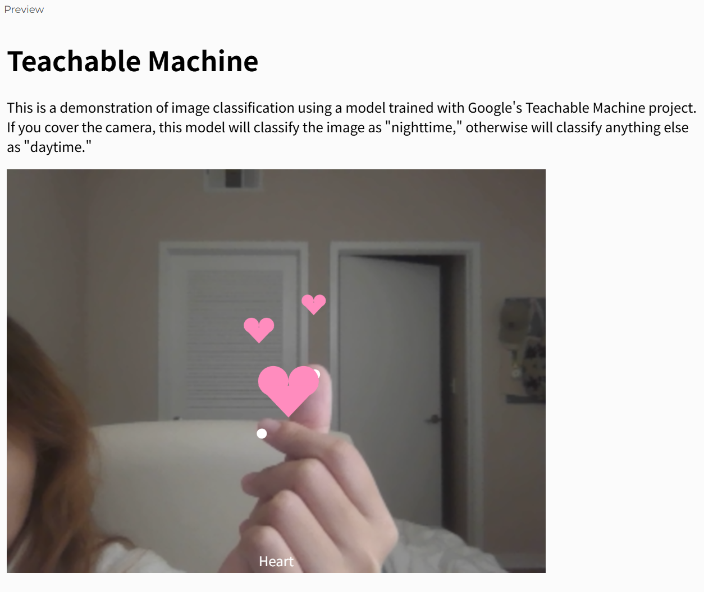
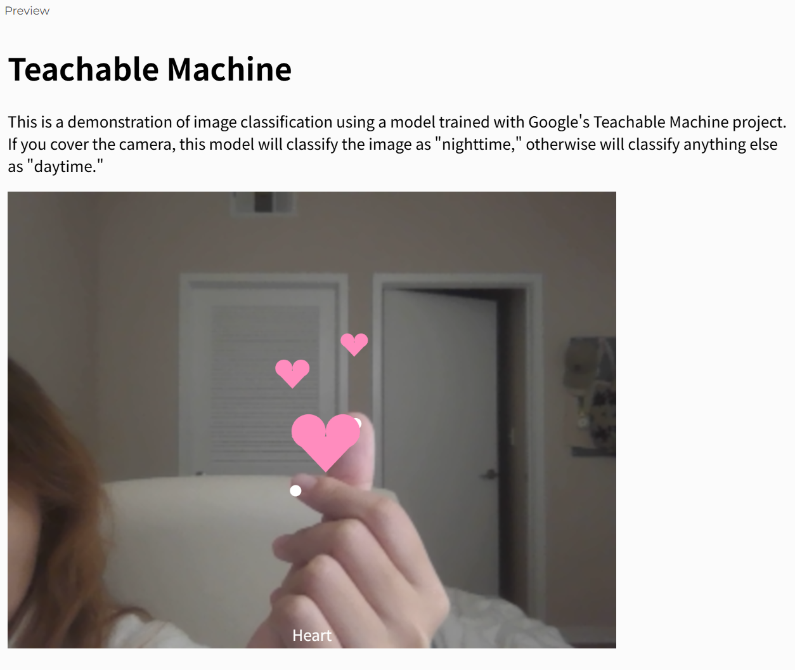
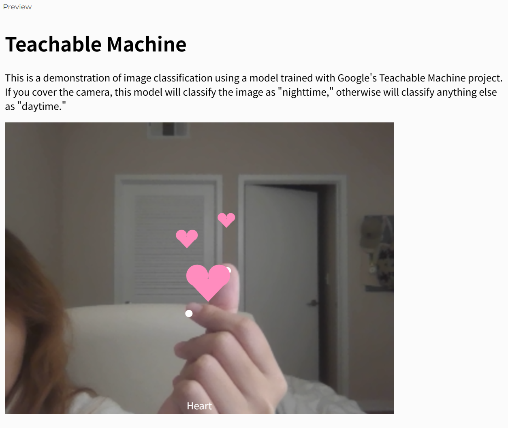

Sketches

 



When I make the "heart" gesture in the camera, it will recognize the position of my finger and generate a heart pattern.😊

When I make the "heart" gesture in the camera, it will recognize the position of my finger and generate a heart pattern.😊